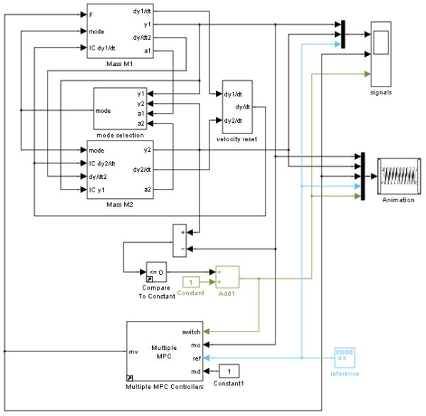
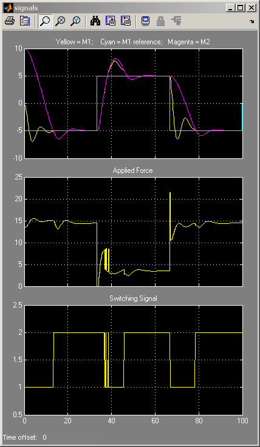
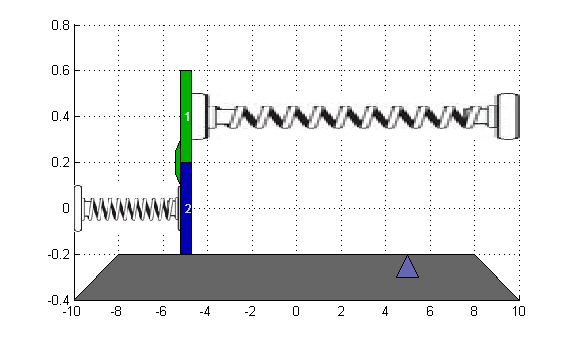
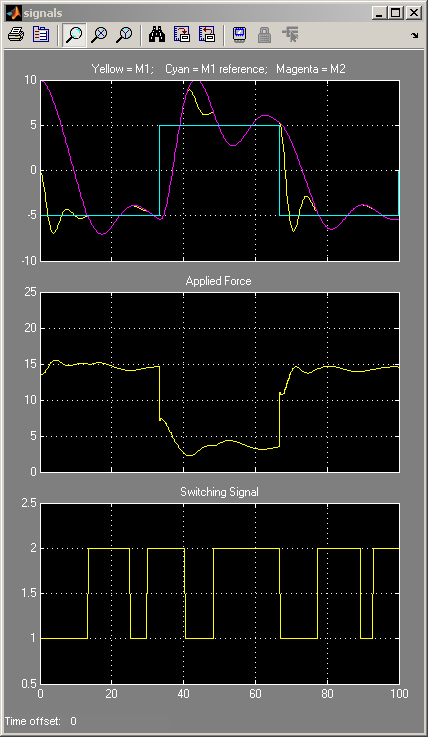
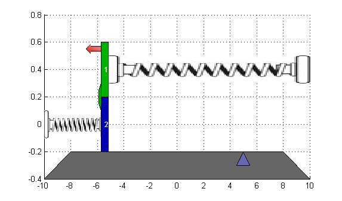
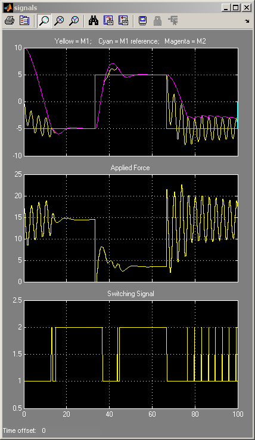
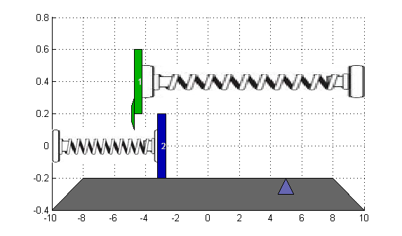

Switching MPC Controllers with Multiple MPC Controllers Block
Contents
This demonstration shows how to use an Multiple MPC Controllers block in a multi-controller set-up to achieve a simple nonlinear control scheme.
Author: A. Bemporad
System Description
The system is composed by two masses M1 and M2 connected to two springs k1 and k2 respectively. The collision is assumed completely inelastic. Mass M1 is pulled by a force F, which is the manipulated variable. The objective is to make mass M1's position y1 track a given reference r.
The dynamics are twofold: when the masses are detached, M1 moves freely. Otherwise, M1+M2 move together. We assume that only M1 position and a contact sensor are available for feedback. The latter is used to trigger switching the MPC controllers. Note that position and velocity of mass M2 are not controllable.
/-----\ k1 ||
F <--- | M1 |----/\/\/\-------------[|| wall
|| | |---/ ||
|| k2 \-/ /----\ ||
wall||]--/\/\/\-------------------| M2 | ||
|| \----/ ||
|| ||
----yeq2------------------ y1 ------ y2 ----------------yeq1----> y axisThe model is a simplified version of the model proposed in the following reference:
A. Bemporad, S. Di Cairano, I. V. Kolmanovsky, and D. Hrovat, "Hybrid modeling and control of a multibody magnetic actuator for automotive applications," in Proc. 46th IEEE® Conf. on Decision and Control, New Orleans, LA, 2007.
Model Parameters
M1=1; % mass M2=5; % mass k1=1; % spring constant k2=0.1; % spring constant b1=0.3; % friction coefficient b2=0.8; % friction coefficient yeq1=10; % wall mount position yeq2=-10; % wall mount position
State Space Models
states: position and velocity of mass M1; manipulated variable: pull force F measured disturbance: a constant value of 1 which provides calibrates spring force to the right value measured output: position of mass M1
State-space model of M1 when masses are not in contact.
A1=[0 1;-k1/M1 -b1/M1];
B1=[0 0;-1/M1 k1*yeq1/M1];
C1=[1 0];
D1=[0 0];
sys1=ss(A1,B1,C1,D1);
sys1=setmpcsignals(sys1,'MD',2);
-->Assuming unspecified input signals are manipulated variables.
State-space model when the two masses are in contact.
A2=[0 1;-(k1+k2)/(M1+M2) -(b1+b2)/(M1+M2)];
B2=[0 0;-1/(M1+M2) (k1*yeq1+k2*yeq2)/(M1+M2)];
C2=[1 0];
D2=[0 0];
sys2=ss(A2,B2,C2,D2);
sys2=setmpcsignals(sys2,'MD',2);
-->Assuming unspecified input signals are manipulated variables.
Multi-MPC Control Setup
Ts=0.2; % sampling time p=20; % prediction horizon m=1; % control horizon
Define MPC object for mass M1 detached from M2.
MPC1=mpc(sys1,Ts,p,m); MPC1.Weights.OV=1;
-->The "Weights.ManipulatedVariables" property of "mpc" object is empty. Assuming default 0.00000. -->The "Weights.ManipulatedVariablesRate" property of "mpc" object is empty. Assuming default 0.10000. -->The "Weights.OutputVariables" property of "mpc" object is empty. Assuming default 1.00000.
Define constraints on the manipulated variable.
MPC1.MV=struct('Min',0,'Max',Inf,'RateMin',-1e3,'RateMax',1e3);
Define MPC object for mass M1 and M2 stuck together.
MPC2=mpc(sys2,Ts,p,m); MPC2.Weights.OV=1;
-->The "Weights.ManipulatedVariables" property of "mpc" object is empty. Assuming default 0.00000. -->The "Weights.ManipulatedVariablesRate" property of "mpc" object is empty. Assuming default 0.10000. -->The "Weights.OutputVariables" property of "mpc" object is empty. Assuming default 1.00000.
Define constraints on the manipulated variable.
MPC2.MV=MPC1.MV;
Simulation with Multiple MPC Controllers Block
if ~mpcchecktoolboxinstalled('simulink') disp('Simulink(R) is required to run this demo.') return end
Simulate with Multiple MPC Controllers block.
Tstop=100; % Simulation time y1initial=0; % Initial positions y2initial=10; open_system('mpc_switching'); if exist('animationmpc_switchoff','var') && animationmpc_switchoff set_param('mpc_switching/Animation','OFF','true'); clear animationmpc_switchoff end
disp('Start simulation by switching control between MPC1 and MPC2 ...'); set_param('mpc_switching/signals','Open','On'); sim('mpc_switching',Tstop);
Start simulation by switching control between MPC1 and MPC2 ... -->Converting model to discrete time. -->Integrated white noise added on measured output channel #1. -->The "Model.Noise" property of the "mpc" object is empty. Assuming white noise on each measured output channel. -->Converting model to discrete time. -->Integrated white noise added on measured output channel #1. -->The "Model.Noise" property of the "mpc" object is empty. Assuming white noise on each measured output channel. 
Use of two controllers provides good performance under all conditions.
Repeat Simulation Using MPC1 Only (Assumes Masses Never in Contact)
disp('Now repeat simulation by using only MPC1 ...'); disp('When two masses stick together, control performance deteriorates.'); MPC2save=MPC2; MPC2=MPC1; sim('mpc_switching',Tstop);
Now repeat simulation by using only MPC1 ... When two masses stick together, control performance deteriorates. 
In this case, performance degrades whenever the two masses join.
Repeat Simulation Using MPC2 Only (Assumes Masses Always in Contact)
disp('Now repeat simulation by using only MPC2 ...'); disp('When two masses are detached, control performance deteriorates.'); MPC1=MPC2save; MPC2=MPC1; sim('mpc_switching',Tstop);
Now repeat simulation by using only MPC2 ... When two masses are detached, control performance deteriorates. 
In this case, performance degrades when the masses separate, causing the controller to apply excessive force.
bdclose('mpc_switching') close(findobj('Tag','mpc_switching_demo'))